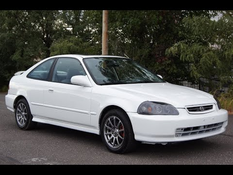

My First Car
When I turned 17 I officially had a driver's license and car to drive. My first car was a 1998 Honda Civic Ex that was previously owned by a relative.
The Honda Civic is catergorized as a Compact Car
and was the definition of an A to B vehicle for me.
Although it was a slow car it was definitely reliable and fuel efficient.
Small, innovative and efficient, Honda's trademark Civic has been a leader in its segment for more than 30 years, and shows no signs of relinquishing its hold on the top spot. If reliability, economy, compact exterior dimensions and an unexpected (but welcome) dose of driving pleasure are important to you, the Civic is a top choice.-(newcartestdrive.com review on the '98 Civic)